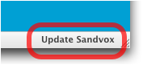

Software updates
Sandvox features automatic software update functionality. If you have it set in your Sandvox preferences, an automatic check for updates is performed whenever Sandvox is launched.
If an update is available, you are alerted as such:
Click the "Download" button to download the updated version of Sandvox.
If you choose not to download the update immediately, a badge appears in the Status Bar to remind you to upgrade later:

Click the badge to update Sandvox. You can also option-click the badge to immediately update Sandvox without being asked to confirm the action.